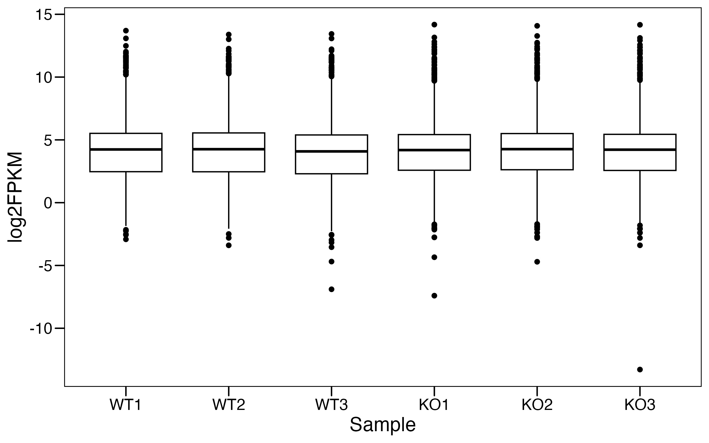
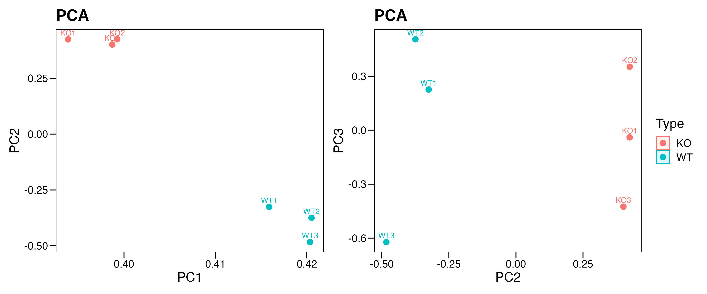
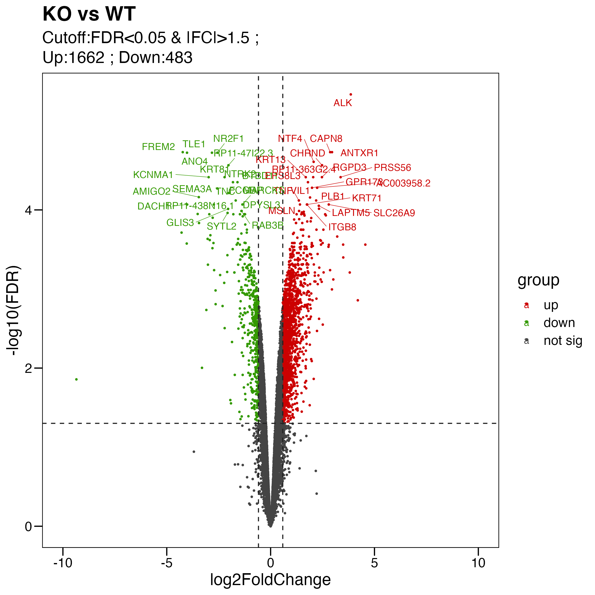
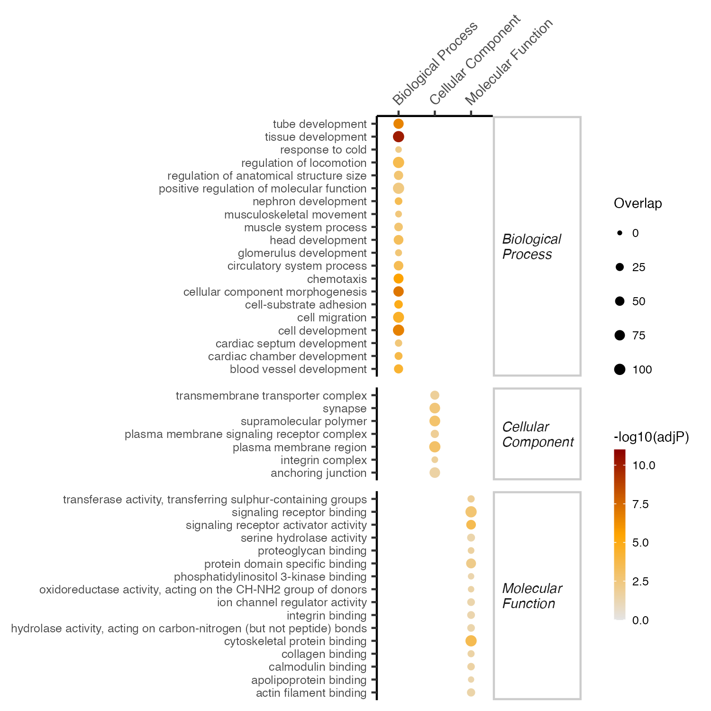
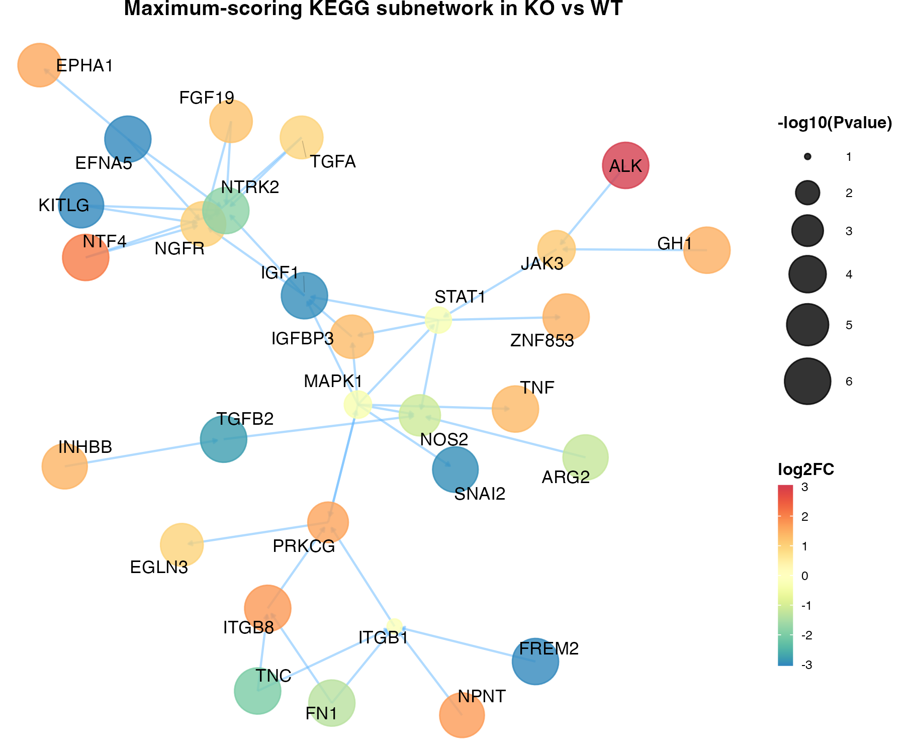

Chapter 4 RNA-Analysis
4.1 基础分析
library(tidyverse)
library(ggpubr)
library(ggthemes)
library(gmodels)
library(patchwork)
library(limma)
library(openxlsx)
library(pheatmap)
library(XGR) # BiocManager::install("hfang-bristol/XGR", dependencies=T)
library(PIONE) # BiocManager::install("hfang-bristol/PIONE", dependencies=T)
dir.create("./results/RNA",recursive = T)
#----------------------------------------------------------------------------------
# Step 1: Load the Data
#----------------------------------------------------------------------------------
rna <- readRDS("./data/20231113_RNA_log2.rds")
meta <- readRDS("./data/20231113_META.rds")
identical(colnames(rna),rownames(meta))
#----------------------------------------------------------------------------------
# Step 2: Boxplot
#----------------------------------------------------------------------------------
rna.long <- rna %>%
pivot_longer(everything(),names_to = "ID", values_to = "logFPKM") %>%
left_join(meta,by="ID")
p <- ggboxplot(rna.long, x="ID", y="logFPKM",
ylab="log2FPKM",xlab = "Sample") +
theme_base() +
theme(plot.background = element_blank())
ggsave("./results/RNA/1.Box.png",p,width = 8,height = 5)
#----------------------------------------------------------------------------------
# Step 3: PCA
#----------------------------------------------------------------------------------
pca.info <- fast.prcomp(rna)
pca.data <- data.frame(sample = rownames(pca.info$rotation),
Type = meta$Type,
pca.info$rotation)
p1 <- ggscatter(pca.data, x = "PC1", y = "PC2",
color = "Type",
ellipse = TRUE,
size = 3,
label = "sample" ,font.label = c(10, "plain"),
main = "PCA") + theme_base() +
theme(plot.background = element_blank())
p2 <- ggscatter(pca.data, x = "PC2", y = "PC3",
color = "Type",
ellipse = TRUE,
size = 3,
label = "sample" ,font.label = c(10, "plain"),
main = "PCA") + theme_base() +
theme(plot.background = element_blank())
p <- p1+p2+plot_layout(guides="collect")
ggsave("./results/RNA/2.PCA.png",p,width = 12,height = 5)
#----------------------------------------------------------------------------------
# Step 4: DEG
#----------------------------------------------------------------------------------
## limma
meta$contrast <- as.factor(meta$Type)
design <- model.matrix(~ 0 + contrast , data = meta)
fit <- lmFit(rna, design)
contrast <- makeContrasts( KO_WT = contrastKO - contrastWT ,
levels = design)
fits <- contrasts.fit(fit, contrast)
ebFit <- eBayes(fits)
## result
# KO_WT
res <- topTable(ebFit, coef = "KO_WT", adjust.method = 'fdr', number = Inf)
limma.res <- res %>% filter(!is.na(adj.P.Val)) %>%
mutate( logP = -log10(P.Value) ) %>%
mutate( contrast = "KO_WT") %>%
mutate( logFDR = -log10(adj.P.Val) ) %>%
mutate( GeneSymbol = rownames(res)) %>%
dplyr::select(GeneSymbol,everything()) %>%
as_tibble()
## cutoff: adj.P.Val < 0.05 && |FC| > 1.5
limma.res <- limma.res %>% mutate(group = case_when( adj.P.Val<0.05&logFC>0.58 ~ "up",
adj.P.Val<0.05&logFC< -0.58 ~ "down",
.default = "not sig"))
limma.res %>% count(group)
## output
write.xlsx( limma.res, "./results/RNA/3.Limma_fdr0.05_fc1.5.xlsx", overwrite = T, rowNames = F)
saveRDS(limma.res,"./results/RNA/3.Limma_fdr0.05_fc1.5.rds")#----------------------------------------------------------------------------------
# Step 5: Volcano
#----------------------------------------------------------------------------------
## volcano
# KO_WT
pdata <- limma.res %>% mutate(group=factor(group,levels = c("up","down","not sig")))
my_label <- paste0( "Cutoff:FDR<0.05 & |FC|>1.5 ; \n" , "Up:",table(pdata$group)[1]," ; " ,"Down:" , table(pdata$group)[2])
# label top 20 sig genes
degs.1 <- limma.res %>% arrange(P.Value) %>% filter(group=="up") %>% slice(1:20) %>% pull(GeneSymbol)
degs.2 <- limma.res %>% arrange(P.Value) %>% filter(group=="down") %>% slice(1:20) %>% pull(GeneSymbol)
pdata <- pdata %>% mutate(label=case_when(GeneSymbol %in% c(degs.1,degs.2) ~ GeneSymbol,
.default = ""))
# plot
p <- ggscatter(pdata,
x = "logFC", y = "logFDR",
color = "group", size = 0.5,
main = paste0("KO vs WT") ,
xlab = "log2FoldChange", ylab = "-log10(FDR)",
palette = c("#CC0000","#339900","#444444"),
label = pdata$label,font.label = 10, repel = T,
xlim = c(-10, 10)
)+
theme_base()+
geom_hline(yintercept = -log10(0.05), linetype="dashed", color = "#222222") +
geom_vline(xintercept = log2(1.5) , linetype="dashed", color = "#222222")+
geom_vline(xintercept = -log2(1.5) , linetype="dashed", color = "#222222")+
labs(subtitle = my_label) +
theme(plot.background = element_blank())
ggsave("./results/RNA/4.Volcano.png", p, width = 8, height = 8)
ggsave("./results/RNA/4.Volcano.pdf", p, width = 8, height = 8)
#----------------------------------------------------------------------------------
# Step 6: GO Enrichment
#----------------------------------------------------------------------------------
placeholder <- "http://www.comptransmed.pro/bigdata_ctm"
## Gene ontology
#sets <- tibble(onto=c('GOBP','GOCC','GOMF')) %>%
# mutate(set=map(onto,~oRDS(str_c("org.Mm.eg",.x),placeholder=placeholder))) ## 小鼠
sets <- tibble(onto=c('GOBP','GOCC','GOMF')) %>% # KEGG
mutate(set=map(onto,~oRDS(str_c("org.Hs.eg",.x),placeholder=placeholder))) ## 人
## KO_WT
# DE genes
deg_vec <- limma.res %>% filter(group!="not sig") %>% pull(GeneSymbol) %>% unique()
# enrichment
esad <- oSEAadv(deg_vec, sets, size.range=c(15,1500), test="fisher", min.overlap=5)
df_eTerm <- esad %>% oSEAextract() %>%
filter(adjp<5e-2, distance==3) %>%
mutate(group=namespace) %>% group_by(group) %>% top_n(100,-adjp) %>%
arrange(group,adjp)
# output
df_eTerm %>% openxlsx::write.xlsx("./results/RNA/5.Enrichment_GO_KO_WT.xlsx")
# plot : oSEAballoon
gp <- df_eTerm %>% oSEAballoon(top=20, adjp.cutoff=0.05, zlim=NULL, slim=c(0,100), size.range=c(0.5,2), shape=19, colormap="grey90-orange-darkred")
ggsave("./results/RNA/5.Enrichment_GO_KO_WT.png", gp, width=5, height=5) 
4.2 进阶分析
#----------------------------------------------------------------------------------
# Step 7: KEGG pathway Crosstalk analysis
#----------------------------------------------------------------------------------
## define KEGG-merged gene interaction network
placeholder <- "http://www.comptransmed.pro/bigdata_ctm"
ig.KEGG.category <- oRDS('ig.KEGG.merged', placeholder=placeholder)
## input : genes , p-value
data.net <- limma.res %>% dplyr::select(GeneSymbol,P.Value)
## maximum-scoring subnetwork
subg <- xSubneterGenes(data.net,network.customised=ig.KEGG.category, subnet.size=30)
# result
subg <- subg %>% xLayout("layout_with_kk")
df_subg <- tibble(Symbol=V(subg)$name) %>% inner_join(limma.res, by=c('Symbol'='GeneSymbol'))
V(subg)$logP <- df_subg$logP
V(subg)$logFDR <- -log10(df_subg$adj.P.Val)
V(subg)$logFC <- df_subg$logFC
# output
out <- igraph::as_data_frame(subg, what="vertices") %>% as_tibble() %>% arrange(-logP) %>% mutate(gene=name)
write.xlsx(out,"./results/RNA/6.KEGG_subg.KO_WT.xlsx",overwrite = T)
saveRDS(subg,file = "./results/RNA/6.KEGG_subg.KO_WT.rds")
# plot
gg_subg <- xGGnetwork(subg,
node.label='name', node.label.size=3,
node.label.color='black', node.label.alpha=1,
node.label.padding=0.1, node.label.arrow=0,
node.label.force=0.1,
node.xcoord="xcoord", node.ycoord="ycoord",
node.color="logFC", colormap="spectral",
zlim=c(-3,3), node.color.title='log2FC',
node.color.alpha=0.8, node.size="logP", node.size.range=c(1,10),
slim=c(1,6), node.size.title="-log10(Pvalue)", edge.color="steelblue1",
edge.color.alpha=0.5,edge.curve=0,edge.arrow.gap=0.01,
title=paste0("Maximum-scoring KEGG subnetwork in KO vs WT"))
ggsave("./results/RNA/6.KEGG_subg.KO_WT.png", gg_subg, width=6, height=5)
ggsave("./results/RNA/6.KEGG_subg.KO_WT.pdf", gg_subg, width=6, height=5)
## network KEGG pathway enrichment
placeholder <- "http://www.comptransmed.pro/bigdata_ctm"
sets <- tibble(onto=c('KEGG')) %>%
mutate(set=map(onto,~oRDS(str_c("org.Hs.eg",.x),placeholder=placeholder)))
subg.node <- vertex_attr(subg)$name
subg.enrich <- oSEAadv(subg.node,sets, size.range=c(15,1500), test="fisher", min.overlap=5)
subg.enrich.df <- subg.enrich %>% oSEAextract() %>%
mutate(group=namespace) %>%
arrange(adjp) %>%
filter(distance==3) %>%
dplyr::select(name,adjp,distance,everything())
write.xlsx(subg.enrich.df,"./results/RNA/7.KEGG_subg.KO_WT_enrichment.xlsx")| name | adjp | group | nO |
|---|---|---|---|
| PI3K-Akt signaling pathway | 0.0e+00 | Environmental Process | 15 |
| MAPK signaling pathway | 0.0e+00 | Environmental Process | 12 |
| Pathways in cancer | 0.0e+00 | Human Disease | 14 |
| Ras signaling pathway | 1.0e-07 | Environmental Process | 10 |
| Leishmaniasis | 2.4e-06 | Human Disease | 6 |
| ECM-receptor interaction | 4.5e-06 | Environmental Process | 6 |